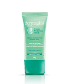

CREMAS FACIALES
Una de cada dos personas tiene la piel sensible, lo que convierte este problema en una de las principales preocupaciones actuales en materia de cuidado de la piel. Todos hemos oído hablar de las pieles sensibles pero, ¿a qué nos referimos exactamente?
En primer lugar, las pieles sensibles no son un tipo de piel. De hecho, la sensibilidad puede afectar a todos los tipos de piel: desde las pieles adolescentes y con tendencia acneica a las pieles secas y maduras.
En segundo lugar, las pieles sensibles no presentan signos de enfermedades cutáneas (como eczema o psoriasis) y, a menudo, parecen normales... Pero nada más lejos de la realidad.
La piel sensible tiene dos causas principales. Primero, su barrera superficial está debilitada, lo que permite que los irritantes externos penetren con mayor profundidad. Segundo, las terminaciones nerviosas de la piel son hipersensibles, lo que desencadena señales de dolor en respuesta a estímulos inofensivos. Para calmar la piel sensible, asegúrate de limpiarla suavemente con agua micelar, luego aplica una bruma de agua termal y un hidratante.
Si experimentas sensaciones incómodas, como tirantez, picor o quemazón, en respuesta a factores como los cambios de temperatura, el viento, los rayos UV, el agua corriente o los productos agresivos y no tienes ninguna erupción visible, probablemente tengas la piel sensible. Si tienes rojeces o erupciones, seguramente se trate de piel reactiva o alérgica. Te recomendamos acudir al dermatólogo para que te ofrezca un diagnóstico definitivo.
Si tu piel presenta malestar cuando simplemente la tocas, es posible que tengas piel muy sensible. En la piel sensible, las terminaciones nerviosas son hipersensibles, lo que desencadena señales de dolor en respuesta a estímulos inofensivos. Sin embargo, si tu piel es sensible debido a que está roja e inflamada, debes consultar a un médico para asegurar que no haya infecciones ni otros problemas médicos.
La piel grasa o seborrea es un exceso de sebo que suele mostrarse en forma de zonas brillantes sobre las áreas centrales del rostro, especialmente en la frente y la nariz. Los poros de la piel se dilatan y la piel es más gruesa. En los casos más graves, puede percibirse una capa de grasa al tocar la piel. La seborrea también puede darse en el cuero cabelludo, y hacer que tu cabello esté graso y pegajoso.
El papel del sebo es evitar que la piel se seque. Paradójicamente, la piel grasa suele ser escamosa en la superficie, causando así dermatitis seborreica en el centro del rostro o el cuero cabelludo.
La buena noticia es que las personas con este tipo de piel suelen tener menos arrugas cuando envejecen. La mala, es que crea el contexto perfecto para que aparezcan puntos negros, granitos y otros síntomas del acné.
La piel grasa es común principalmente en la cara y el cuero cabelludo. Se produce cuando las glándulas sebáceas de la piel trabajan en exceso y producen demasiado sebo. La buena noticia es que las personas con este tipo de piel tienden a tener menos arrugas a largo plazo. La mala noticia es que se pueden crear las condiciones perfectas para espinillas, granos y otros síntomas del acné.
Los cambios hormonales pueden estimular el aumento de la producción de sebo. Las hormonas fluctúan durante la pubertad, antes de los períodos, durante el embarazo y con la menopausia. El estrés o las enfermedades también pueden causar desequilibrios hormonales, lo que resulta en una piel grasa y acné. Entre otros.
El exceso de grasa tiende a atrapar la suciedad y las bacterias en los poros, por lo que es importante limpiar la piel y quitar el maquillaje al final de cada día. El sebo también se acumula mientras duermes, así que limpia suavemente tu cara por la mañana. Por último, aunque el ejercicio es bueno para la piel, las células muertas, las bacterias y la suciedad pueden acumularse mientras estás en el gimnasio, lo que conduce a un 'brote de entrenamiento'. Quítate el maquillaje antes de hacer ejercicio y después limpia tu cara y tu cuerpo.
La piel normal suele ser el resultado de una buena circulación. Tus poros son minúsculos y prácticamente invisibles. La piel también se ve más suave, más limpia y más sana que otros tipos de piel, y casi nunca se pone como un tomate con la exposición inmediata al sol. Aunque es menos propensa a los problemas, de todas maneras deberías cuidarla con tratamientos para piel normal. ¡Un cuidado inteligente de la piel ahora puede prevenir problemas de la piel en el futuro!
La piel seca tiene pocas señales de sebo (el aceite producido por las glándulas sebáceas) y no lo retiene fácilmente. Tus poros son minúsculos y prácticamente invisibles. Eres propensa a sentir la piel un poco tirante y tu piel puede verse poco luminosa debido a la falta de agua y oxígeno. La piel se puede sentir gruesa y también es más susceptible a la irritación. Entonces, ¿qué causa la piel seca? Suele ser hereditario, pero el clima extremo, los productos de belleza inadecuados y las duchas prolongadas y calientes también pueden resecarte la piel.
La piel grasa o seborrea es un exceso de sebo que suele mostrarse en forma de zonas brillantes sobre las áreas centrales del rostro, especialmente en la frente y la nariz. Los poros de la piel se dilatan y la piel es más gruesa. En los casos más graves, puede percibirse una capa de grasa al tocar la piel. La seborrea también puede darse en el cuero cabelludo, y hacer que tu cabello esté graso y pegajoso.
El papel del sebo es evitar que la piel se seque. Paradójicamente, la piel grasa suele ser escamosa en la superficie, causando así dermatitis seborreica en el centro del rostro o el cuero cabelludo.
La buena noticia es que las personas con este tipo de piel suelen tener menos arrugas cuando envejecen. La mala, es que crea el contexto perfecto para que aparezcan puntos negros, granitos y otros síntomas del acné.